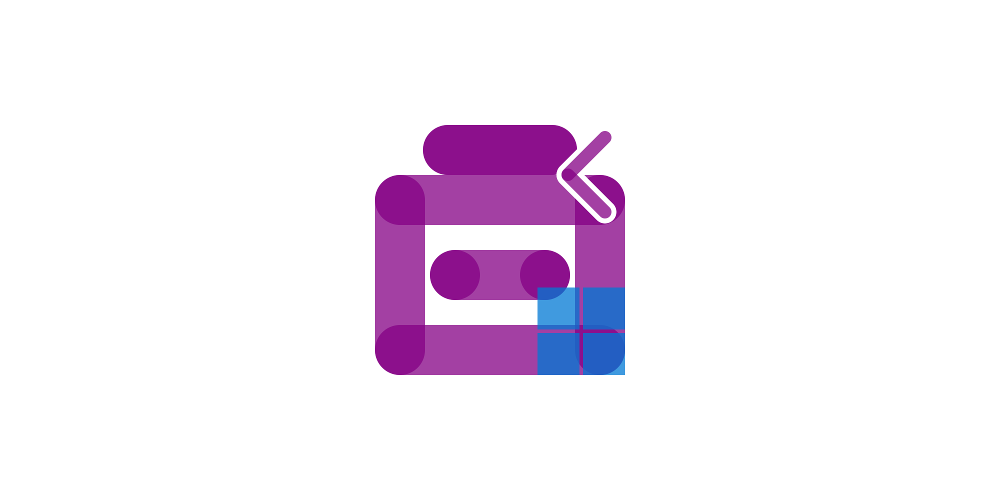

RoguePlanetoid Weekly Update #67
1st September 2024

This week was great to make some progress with some upcoming projects, one of which is a new Podcast I'm working on which I'll be sharing more details about
soon. I also went along to the Silicon Summer event for Silicon Mingle which was a great opportunity to catch up with people, many I hadn't
seen in a while as well as meet some new people and talk about how am helping new and existing podcasters with Cluarantonn.
There was also a chance the following morning to go along to another The Mussel Club event and make some new connections, it is great to get out and meet so
many amazing people and find out about all the things they are doing too. It is fantastic to not only be part of an amazing Tech Scene in the North East of England but be also
part of the wider small business community here.
This week ended with some amazing news which I've also posted about which was being awarded the Microsoft MVP Award for .NET and
Windows Development in recognition of the hard work I've been doing and will continue to do for the developer community not just here in the
North East of England but also in the wider community too, so was a fantastic way to end the week. RoguePlanetoid Podcast also saw the release
of the latest Episode about Windows 11 Widgets which I have been learning about for the past few weeks and hope
to speak about at an event in the future too, especially as I can now add after my name that I'm a Microsoft MVP.
Next week I'll be continuing some projects I'm working on and to built upon the things I've been doing and the recognition becoming a Microsoft MVP as well
as planning ahead for a few things I'll be doing or learning this month, so there's still plenty of work to be done but with this month already off to an amazing start and
if it continues like it has started it will be an superb September!
Comentsys.Toolkit.WindowsAppSdk 2.1.0 Released
1st September 2024

Today sees the Release of version 2.1.0 of my Toolkit of Comentsys.Toolkit.WindowsAppSdk for Windows App SDK
on both NuGet and open-source on
GitHub. This Release adds more support for Windows 11 Widgets
including helping to create customisable Widgets as well as methods that can be used when a Widget is added to or removed from the Widgets Board.
It was great to be able to release this updated Comentsys.Toolkit.WindowsAppSdk the same day that I received my Microsoft MVP award, which
didn't even take into account this newly updated package, but is my way of helping Windows App SDK developers using .NET everywhere who
want to create Windows 11 Widgets.
Awarded Microsoft MVP for .NET & Windows Development
1st September 2024

Today it was fantastic to see that I had received the MVP (Most Valuable Professional Award) from Microsoft for .NET
and Windows Development. The MVP Award is there to recognise the exceptional contributions from those in the Microsoft technical
community for their expertise, leadership, speaking experience, influence and commitment to solving issues that impact people in their lives. I am both honoured and
humbled to have received this award today and become a Microsoft MVP!
I've been a software developer for over thirty years starting out on my Commodore 64 coding in BASIC, then moving more toward the
Microsoft ecosystem with Visual Basic 6 before finally witnessing the arrival of .NET with the original .NET Framework which I have
witnessed grow from its roots to the modern .NET it is today which has included over twenty years of professional experience as a developer first using
VB.NET and mostly to now using C#.
I've seen platforms come and go that use .NET but always been willing to share what I know from day one with tutorials or help people get started or progress in their careers
or get interested in development with my workshops. I've also shared what I know over the years with my presentations which now next to my name can put that I am a
Microsoft MVP!
RoguePlanetoid Podcast - Episode Twenty - Windows 11 Widgets
1st September 2024

Today sees the release of Episode Twenty of the RoguePlanetoid Podcast
about Windows 11 Widgets, Windows 11 Widgets are a convenient and glanceable
way to keep you informed and productive without interrupting your workflow.
You will find the Podcast where you listen to your podcasts such as Spotify,
Amazon Music, RadioPublic, Apple Podcasts, Pandora,
YouTube Music along with YouTube where you can catch up with previous episodes
and Subscribe or Follow so you don't miss any future Episodes.